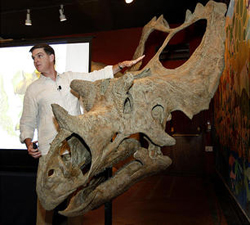

This season's guest speakers
Scott Sampson

Scott Sampson is a Canadian-born paleontologist who has become one of the world’s leading experts on dinosaurs. After earning his doctorate in zoology from the University of Toronto, Scott was employed by the Tyrrell Museum of Paleontology in Alberta, Canada, where he worked on a number of dinosaur discovery projects.
In addition to his work as a scientist, Scott is also a gifted public speaker and author. He has appeared on numerous television programs and has written several books for adults and children.